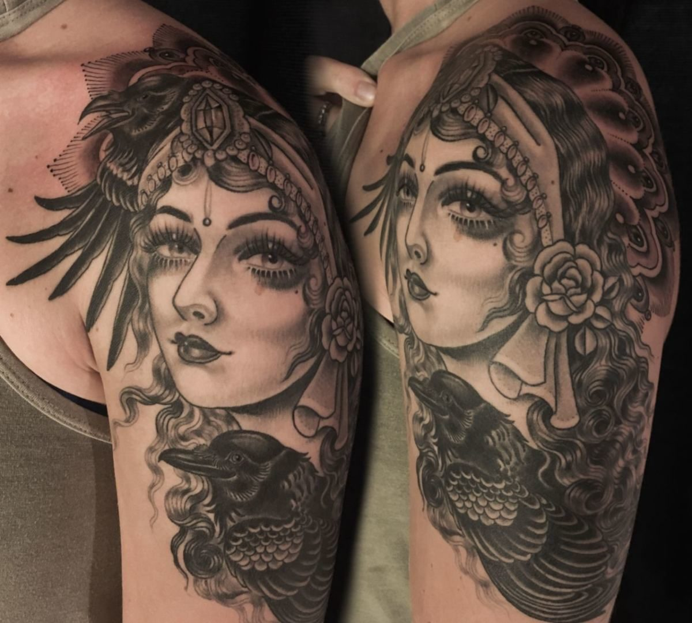

Rose Hardy is an amazingly talented painter and tattoo artist from New Zealand who made it to NYC and called it home; since her beginnings her tattooing career has been sky rocketing, and today her name is established as one of the most creative, original and glamorous tattoo artist out there. Her unique style makes her work quite recognizable, especially when it comes to depicting female characters. She is also one of the most famous female tattooers worlwide, often in the spotlight, and that can be a little intimidating (also because of her stunning presence!), but she likes to keep it simple and down to earth… and she still manages to be very much humble, honest and sweet. She has been tattooing out of Kings Avenue Tattoo in NYC, for a few years now and that’s where I meet her for a quick chat and few pictures.
I grew up in a small town on the North island of New Zealand called Whangarei… I guess tattooing was always in front of me, my dad has an eagle on his forearm done in the 60’s by a guy named Tiger Mitchell. He also has a hand-poked scorpion on his other forearm that he did himself. When I was about 13 I would attempt to tattoo lettering on my sister and our friends – stuff like ‘Jason 4 ever’ (she laughs). My mum went crazy after she saw one on my sister and I had some fresh dots on my hand. Luckily I didn’t do them deep enough so nothing stayed in completely.
Obviously working with everyone at Kings Ave has pushed me and influenced me in certain ways. This city has such a high energy (compared to Melbourne where I was for 5 years before), where you feel like you should be busy working on something all the time- there is so much going on. In some ways I get exhausted from it, but it has some kind of energy that makes you push forward and try and get ahead. Because if you don’t, it feels like you could get left behind. As far as artistic influence, a lot of the things I look towards come from the past. Old photography, fashion, jewelery. There are so many incredible galleries in this city with a wealth of reference and inspiration.
I’ve have always had a positive experience as a female tattooer. When I started, I got so much help from the guys around me – and continue to. I feel like I have mostly worked with very respectful people, and don’t really have any situations that made me feel on the outside. I have always worked with other woman and have made some of my best friends through tattooing. I have so much respect for Nikole Lowe, Claudia Sabe, Sarah Schor, Jenn Lee, Jane Laver – so many. All so strong and such hard workers and amazing artists also amazing painters!